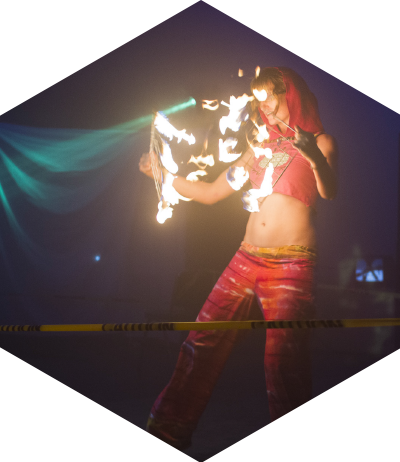
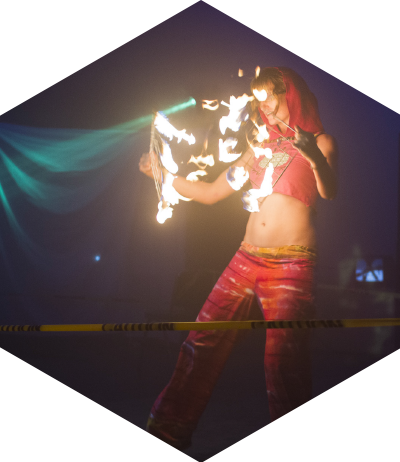

During the first hour after ingesting Molly, the user is brimming with anticipation, waiting for Molly’s effects to flood over his body. Once Molly enters the users bloodstream, they begin to feel its effects pulsating through their body. Tingling their senses. An overwhelming sense of euphoria will overwhelm him for the next few hours.
Greg, 23, from California said that feeling crept up his lower back and moved across his body in waves. “And then your vision starts getting a little blurry and messed up, like you can't read small print and or anything like that. You start to forget what you're talking about mid-sentence. And you definitely start getting a good body feeling like feelings of euphoria,” he says.
The first time Richard, 23, from California used Molly he was in his junior year of high school at a party. “I heard it was fun and other people were doing it so I was going to be the cool kid and I guess just try it,” says Richard. He recalls feeling as if his head was vibrating and a feeling of pure happiness. “I remember when I took it I felt like someone was massaging my head, but no one was touching me,” says Richard.
The effects of Molly typically last from four to six hours, but the hangover itself has a delayed response. Josh said the first couple of times he used Molly the days after were not excruciating.
“You start gradually turning back to reality. All of a sudden light itself doesn’t look like a solid object. It just looks like a F****** light,” says Josh. “The first couple times you take it and you wake up the next day and feel great. It’s called an afterglow. For some reason you just feel wonderful the next day. The second day after you’ve taken it you don’t feel so great. It’s like that’s when the hangover happens. Imagine getting trashed from alcohol thinking, ‘I’ll be great tomorrow, but the next day I’ll be puking in a toilet.’ That’s how it was.”
For Josh, the more often he used Molly, the less interesting the experience was and the worse the hangover.
“It’s more dull. It’s more cloned. It’s less interesting. Then the second day the afterglow completely disappears and a miniature hangover happens. Then the second day the real, real hangover starts to magnify slowly. Then it starts to go on for longer. You don’t recover immediately. It takes more than three days to recover from it. It starts going to four, five, six. And then it turns into where you take it and you know the next week is going to suck,” he said. “It just became unpleasant.”
MDMA impacts the user’s nervous and cardiovascular systems. MDMA targets the brain’s three main neurotransmitter systems; dopamine, which is a chemical released by nerve cells which sends signals to other nerve cells, serotonin, which is most commonly associated with the feeling of happiness or well being but can also control appetite, sleep, memory, temperature regulation and cardiovascular function, and norepinephrine, which affects the heart rate.
According to Michael J. Kuhar, Ph.D., Yerkes National Primate Research Center of Emory University and Candler Professor of Neuropharmacology, School of Medicine, MDMA is “an amphetamine derivative. Its main effect is to “inhibit the uptake of serotonin and promote its release,” he says.
On a more biological front, high doses of MDMA can cause high blood pressure and irregular heart function, and in extreme cases serious mental clouding, seizures and perhaps death, Kuhar says.
Once MDMA is ingested, serotonin containing nerve terminals start putting out large amounts of excess serotonin. Meanwhile both norepinephrine and dopamine are also released. “The release of these chemical messages, or neurotransmitters, creates a whole array of symptoms, which are attributable to the activity of these chemicals on their target sites,” says Bertha K. Madras, Ph.D. from Harvard’s department of Psychiatry.
Other effects related to the drug can be increased body temperature, higher energy and activity (which can be a factor to the high body temperature) and sleep problems.
Alongside Molly’s growth and corruption have been talks about its addictive traits. Many disagree on its addictive properties. Users believe it’s not addicting, while Madras thinks the drug can be addictive, and that younger users are more at risk because they have not had negative experiences with the drug in the past.
“In other words, they’re not sitting in a hospital emergency department, which can happen. They haven’t had an acute cardiovascular event,” she says. “They haven’t suffered hyponatremia, you know, so their kidneys shut down. They haven’t had an acute hyperthermia where their body temperature has risen over 105. For many of these folks that have had the experience without these negative effects, there’s a perception that the drug is safe, but the science tells us quite differently.”
For Kuhar, he has not seen enough research on the subject to make a definite judgment on its addictive properties. “For a substance to be considered addicting the hallmark has to be that you seek the drug in spite of negative consequences in your life and personal distress,” said Kuhar.
“Now as far as I know there are not a lot of controlled studies showing there is a lot of addiction in humans, although I think it’s definitely a possibility. Animal studies suggest that animals will self-administer the drug; they will seek out MDMA. But it seems that animals may seek out MDMA less than they do other substances like cocaine. That is not to say the dangers of the drug are any less overall than the dangers of something that’s more addicting like opium or cocaine, because the dangers are significant.” Kuhar says.


 
